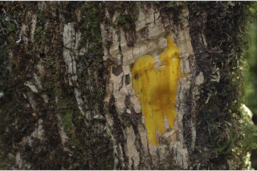
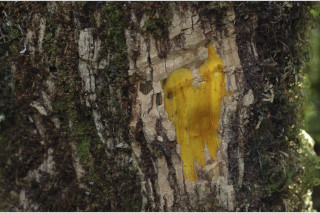
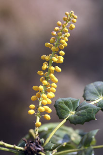
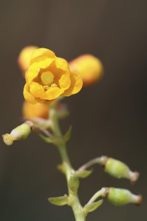
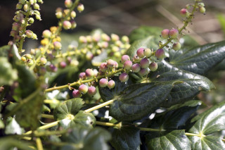
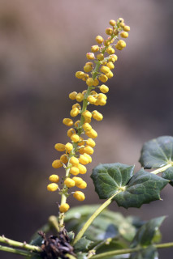
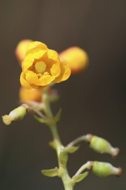
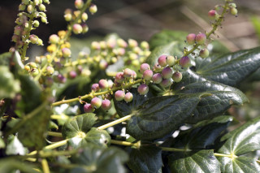

Large shrubs or small trees ca. 6 m tall.
ದೊಡ್ಡ ಪೊದೆಗಳು ಅಥವಾ ಅಂದಾಜು 6ಮೀ. ಎತ್ತರ ಬೆಳೆಯುವ ಸಣ್ಣ ಮರಗಳು.
ഉദ്ദേശം 6 മീറ്റര് വരെ ഉയരത്തില് വളരുന്ന വലിയ കുറ്റിച്ചെടികളോ ചെറുമരങ്ങളോ.
குறுஞ்செடி அல்லது சிறிய மரம், 6 மீ. வரை வளரக்கூடியது
Bark corky, greyish, fissured; blaze yellowish.
ತೊಗಟೆ ಬೆಂಡು ರೀತಿ ಇದ್ದು, ಬೂದು ಬಣ್ಣ ದ್ದು ಸೀಳಿಕಾ ಮಾದರಿಯಲ್ಲಿರುತ್ತವೆ ಹಾಗೂ ಕಚ್ಚು ಮಾಡಿದ ಜಾಗ ಹಳದಿ ಬಣ್ಣ ಹೊಂದಿರುತ್ತದೆ.
ചാര നിറത്തിലുള്ള, വിണ്ടുകീറിയ
மரத்தின் பட்டை கார்க் போன்றது, வெளிறிய சாம்பல் நிறமானது, நீள்வாக்கில் பிளவுகளுடையது; உள்பட்டை மஞ்சள் நிறமானது.
Branchlets terete, glabrous.
ಕಿರುಕೊಂಬೆಗಳು ದುಂಡಾಕೃತಿ ಹೊಂದಿದ್ದು ರೋಮರಹಿತವಾಗಿರುತ್ತವೆ.
ഉപശാഖകള് ഉരുണ്ടതാണ്, അരോമിലം.
சிறிய நுனிக்கிளைகள் குறுக்குவெட்டுத் தோற்றத்தில் வளையமானது, உரோமங்களற்றது.
Leaves compound, imparipinnate, alternate, spiral, clustered at twig ends, up to 48 x 13 cm, pulvinate; rachis slightly angular; leaflets 5 to 25 in pairs with terminal one, increasing in size towards the end, lamina 3-9 x 2-5 cm and the lowermost pair ca.1 cm long, sessile, generally ovate except the lowermost polygonal in shape, margin and apex prominently spiny dentate, base cordate, coriaceous, shiny above, pale beneath, 5-7 ribbed at base.
അസമ പിച്ഛക ബഹുപത്രങ്ങള്, ഏകാന്തരക്രമത്തില്, സര്പ്പിളാകൃതിയില്, കമ്പുകളുടെ അറ്റത്ത് കൂട്ടമായി ക്രമീകരിച്ചിരിക്കുന്നു, 48 സെ. മീ വരെ നീളവും 13 സെ.മീ വരെ വീതിയും, പത്രവൃന്തതല്പത്തോട് കൂടിയതാണ്; പത്രാക്ഷം ലഘുവായി കോണാകാരത്തിലാണ്; പത്രകങ്ങള് 5 മുതല് 25 വരെ ജോഡികള്, അറ്റത്ത് ഒരെണ്ണം മാത്രം, അഗ്രത്തോടടുക്കുമ്പോള് വലുപ്പം കൂടുന്നു, പത്രഫലകത്തിന് 3 സെ. മീ മുതല് 9 സെ.മീ വരെ നീളവും 2 സെ. മീ മുതല് 5 സെ.മീ വരെ വീതിയും, ഏറ്റവും താഴത്തെ ജോഡിക്ക് ഉദ്ദേശം 1 സെ.മീ നീളം, അവൃന്തമാണ്, ഏറ്റവും അറ്റത്തേതൊഴിച്ച് സാധാരണയായി അണ്ഡാകാരം, അറ്റത്തേതിന് ബഹുകോണിത ആകൃതി, അരികുകളും അഗ്രവും നന്നായി മുള്ളോട് കൂടിയ ദന്തുരം, പത്രാധാരം ഹൃദയാകാരത്തില്, ചര്മ്മില പ്രകൃതം, തിളക്കമുളള മുകള്ഭാഗം, വിളറിയ കീഴ്ഭാഗം, പത്രാധാരത്തില് 5 മുതല് 7 വരെ ജോഡി വരമ്പുകളുണ്ട്.
இலைகள் கூட்டிலைகள், ஒற்றைபடை சிறகுவடிவக்கூட்டிலைகள், மாற்றுஅடுக்கமானவை, சுழல் போன்று அமைந்தவை, நுனிக்கிளையில் இலைகள் கூட்டமாக மற்றும் நெருக்கமாகமைந்தவை, 48 X 13 செ.மீ. நீளமானது, பல்வினேட்; கூட்டிலையின் மத்தியகாம்பு (ராக்கிஸ்) கோணங்களுடையது; ஒர் கூட்டிலையில் சிற்றிலைகள் 5-25 ஜோடிகளுடன் நுனியில் ஒற்றை இலையுடையது, ஒர் கூட்டிலையின் தளத்திலுள்ளவைவிட நுனியில் காணப்படும் சிற்றிலையின் அலகு பெரியது, சிற்றிலையின் அலகு 3-9 X 2-5 செ.மீ. மற்றும் தளத்திலுள்ள ஜோடியின் அலகு 1 செ.மீ. நீளமானது, காம்பற்றவை, பொதுவாக முட்டை வடிவானது ஆனால் தளத்திலுள்ளவையின் அலகு பல கோணங்களுடையது, அலகின் விளிம்பு மற்றும் அலகின் நுனி கூர்மையான முட்கள் போன்ற பல்லுடையது, அலகின் தளம் இதய வடிவானது (கார்டேட்), கோரியேசியஸ், அலகின் மேற்பரப்பு பளபளப்பானது, கீழ்பரப்பு வெளிறிய நிறமுடையது, தளத்திலே 5-7 நரம்புகளுடையது
Inflorescence long terminal racemes, ca. 30 cm long; flowers yellow, pedicels ca. 10 mm long.
ಎಲೆಗಳು ಸಂಯುಕ್ತ ಅಸಮಸಂಖ್ಯಾಗರಿ ರೂಪಿಗಳಾಗಿದ್ದು ಪರ್ಯಾಯ ಮತ್ತು ಸುತ್ತು ಜೋಡನಾ ವ್ಯವಸ್ಥೆಯಲ್ಲಿದ್ದು ಕುಡಿಕೊಂಬೆಗಳ ತುದಿಯಲ್ಲಿ ಗುಂಪಾಗಿರುತ್ತವೆ; 48 13ಸೆಂ.ಮೀ. ವರೆಗಿನ ಉದ್ದ ಹೊಂದಿದ್ದು ಉಬ್ಬಿದ ಬುಡಭಾಗ ಸಮೇತವಿರುತ್ತದೆ; ಅಕ್ಷದಿಂಡು ಕೊಂಚ ಕೋನಯುಕ್ತವಾಗಿರುತ್ತದೆ. ಕಿರುಎಲೆಗಳು 5 ರಿಂದ 25 ಉದ್ದ ಜೋಡಿಯಾಗಿದ್ದು ಒಂದು ಎಲೆ ತುದಿಯಲ್ಲಿರುತ್ತದೆ. ಕಿರು ಎಲೆಗಳ ಗಾತ್ರ ಎಲೆಯ ಕೊನೆಯವರೆಗೆ ಹೆಚ್ಚುತ್ತಾ ಹೋಗುತ್ತದೆ. ಎಲೆಪತ್ರ 3 ರಿಂದ 9ಸೆಂ.ಮೀ. ಉದ್ದ, 2 ರಿಂದ 5 ಸೆಂ.ಮೀ. ಅಗಲವಿದ್ದು ತಳಭಾಗದ ಕಟ್ಟಕಡೆಯ ಕಿರುಎಲೆ ಅಂದಾಜು 1ಸೆಂ.ಮೀ. ಉದ್ದವಿರುತ್ತದೆ; ಕಿರು ಎಲೆ ಪತ್ರಗಳು ತೊಟ್ಟುರಹಿತ, ತಳಭಾಗದ ಕಟ್ಟಕಡೆಯ ಎಲೆಪತ್ರ ಬಹುಭುಜಾಕೃತಿ ಯನ್ನು ಹೊಂದಿರುವುದನ್ನು ಬಿಟ್ಟರೆ ಸಾಮಾನ್ಯವಾಗಿ ಉಳಿದ ಎಲ್ಲಾ ಪತ್ರಗಳು ಅಂಡಾಕೃತಿಯನ್ನು ಹೊಂದಿರುತ್ತದೆ. ಅಂಚು ಮತ್ತು ತುದಿ ಪ್ರಮುಖವಾಗಿ ಮುಳ್ಳುದಂತಿತವಾಗಿರುತ್ತದೆ. ಪತ್ರ ಬುಡ ಹೃದಯಾಕಾರದಲ್ಲಿರುತ್ತದೆ. ಪತ್ರಗಳು ತೊಗಲನ್ನೋಲುವ ಮೇಲ್ಮೈ ಹೊಂದಿರುತ್ತದೆ ಹಾಗೂ ಮೇಲ್ಭಾಗ ಹೊಳಪಾಗಿದ್ದು ತಳಭಾಗ ಮಂದವಾಗಿರುತ್ತದೆ. ಪತ್ರದ ಬುಡಭಾಗದಲ್ಲಿ 5-7 ನಾಳಗಳಿರುತ್ತವೆ.
ഉദ്ദേശം 30 സെ. മീ നീളമുളള കുത്തനെയുളള ഉച്ഛഝസ്ഥ, റസീമുകളായ പൂങ്കുലകള്; മഞ്ഞനിറമുളള പൂക്കള്, പൂഞെട്ടിന് ഉദ്ദേശം 10 മീ. മീറ്റര് നീളം.
மஞ்சரி தண்டின் நுனியில் காணப்படுவது, நிமிர்ந்த ரெசீம், 30 செ.மீ. நீளமானது; மலர்கள் மஞ்சள் நிறமானது, மலர்காம்பு 1 செ.மீ. நீளமானது.
Berry, globose, glaucous, purple, 1-3 seeded.
ಪುಷ್ಪಮಂಜರಿಗಳು ಅಂದಾಜು 30ಸೆಂ.ಮೀ. ಉದ್ದವಿದ್ದು ತುದಿಯಲ್ಲಿರುವ, ನೇರವಾದ ಮಧ್ಯಾಭಿಸರ ಮಂಜರಿ ಮಾದರಿಯಲ್ಲಿರುತ್ತವೆ; ಹೂಗಳು ಹಳದಿ ಬಣ್ಣ ಹೊಂದಿದ್ದು ಅಂದಾಜು 10ಮೀ.ಮೀ ಉದ್ದದ ತೊಟ್ಟನ್ನು ಹೊಂದಿರುತ್ತವೆ.
1 മുതല് 3 വരെ വിത്തുകളുളള, നീലരാശി കലര്ന്ന ഊതനിറമുളള, ഗോളാകാരത്തിലുളള ഫലങ്ങള് ബെറിയാണ്.
முழுச்சதைகனி (பெர்ரி), கோளவடிவானது, மெழுகு பூசினாற் போன்றது, பர்புள் நிறமானது, 1-3 விதைகளையுடையது.
 



 




